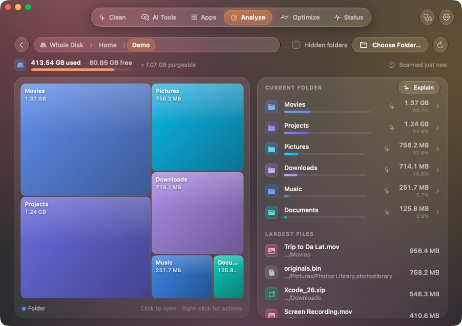

Clean
Caches, logs, build leftovers and old installers, sorted into Safe, Review and Manual so you know what each one costs.
Gon finds the space your Mac quietly gave away — caches, build leftovers, forgotten installers, apps you removed months ago — and shows you every item before anything goes to the Trash.
Scan figures from a developer's Mac; yours will differ.
Each part of Gon has its own color, so you always know where you are. Everything runs on your Mac.
Caches, logs, build leftovers and old installers, sorted into Safe, Review and Manual so you know what each one costs.
Caches and old builds of AI coding tools, chats whose project is gone, and worktrees you already finished with.
Uninstall an app with everything it left behind, tidy what starts at login, and see which apps have updates.
A treemap of the whole disk with the largest files beside it. Shared and cloned files are counted once.
Maintenance and quick fixes, with one password prompt for everything that needs one and a result for each task.
Live CPU, memory, disk, network, battery and temperatures, every process — and why it is running.
Gon reads your caches, logs, developer tools and Downloads, then lays out what it found with what each item is and what happens if it goes.
No spinners. Each progress screen is driven by real numbers — what was found, what was freed, which task is running.
A treemap of every folder, sized as it is measured, with the largest files beside it. Open any block to go deeper; move what you don't need to the Trash from right there.

Dragging an app to the Trash leaves its settings, caches and helpers behind. Gon finds them, shows how it knows, and removes them with the app.
Maintenance that matters on a modern Mac. Each task says what it did, or why it skipped.
A live dashboard and a menu bar companion, read straight from macOS and light enough to leave open all day.
A cleaner is only as good as what it refuses to touch. Every removal in Gon goes through one gate.
Nothing moves until you press Move to Trash. Deep links and automation can scan, never remove.
Even files that need an administrator go to your Trash, so a change can always be undone.
System folders, Keychains, Mail, Messages, SSH keys, sign-in files and your documents are never touched.
If a file was swapped or replaced after the scan, Gon leaves it alone and tells you. Next update
A log of each operation — and, next, of every file: when it went, how, and how big it was.
Sync, security and sign-in caches stay put — and next, fonts, Spotlight and the system's own model caches too. Next update
Gon ships no model and no API key. If you already have an assistant on your Mac, Gon can ask it what an unfamiliar folder is and how to free its space — one click, one question.
Download, open, scan. That's it.
Gon collects nothing about you or your files.
SwiftUI, made for macOS 14 and later.
Free for macOS 14 or later on Apple silicon. Gon keeps itself up to date.
Drag Gon into Applications.
Gon isn't notarized by Apple yet. If macOS stops it, open System Settings › Privacy & Security and choose Open Anyway.
For complete scans, turn on Full Disk Access for Gon in the same settings pane.